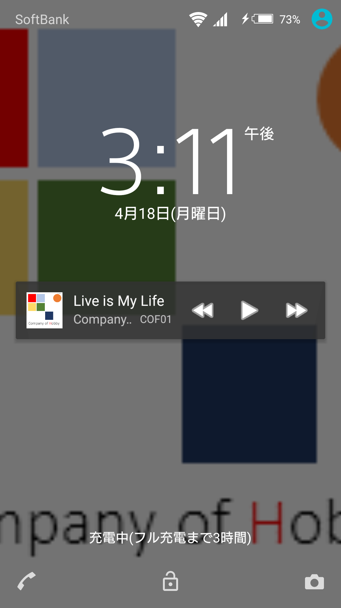
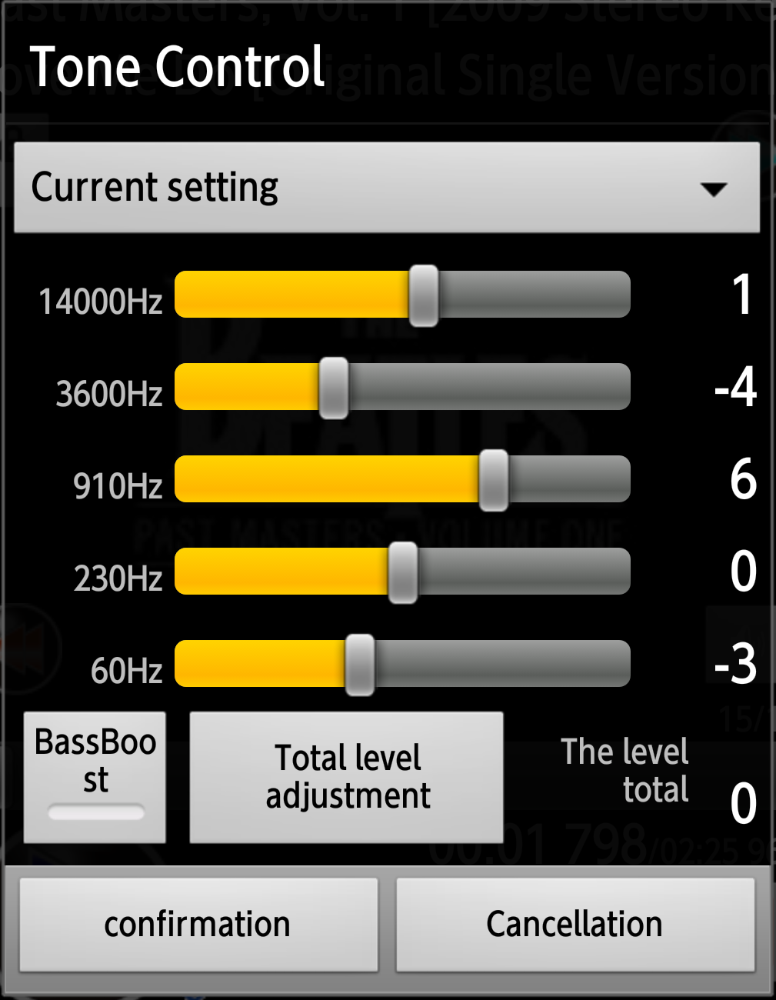

|
Music player usable commonly
MaraSongs |
|
| A word marathon had come out to one of the expressions indicating "following endlessly" and hit on this coined word as the name of the music player whom I continued regenerating endlessly. I make the player who I stand and stop, and does not need to choose the album again even if a marathon runner uses it for BGM. | ||
This application |
||
1.It is a music player usable commonlyBecause I aim at the substitution from the fourth generation iPod that I used for many years to Android... |
||||
at any rate
Lyric indication |

|
|||
| . |
I begin to read a lyric set in a music file.
|

|
||
| . |
All songs consecutive reproduction |

|
||
| . |
If if reproduction for one piece of album is over, to the next album of the artist, artist is over; is ... to the next artist If MaraSongs generates list of " all songs ", and the last music is over, I return to the first music and regenerate it consecutively until I operate a stop. As for much music players made for (Android, consecutive reproduction stops by an album unit;). |

|
||
| List of all songsgathers up the album which was divided because an artist name performed credit of is different in guest participation and compilation in one piece of album again. | ||||
I can adjust the artist that albums are listed.
|

|
|||
| If there is not time to make a list of all songs because I can read the general-purpose playlist, a terminal of the use can regenerate even the existing list which there is. | ||||
| Good use of playlist |

|
|||
| . |
As for the reading on a list made with other application and the new making and editing, there are rice cake Ron, the slight smart playlist function.
|
|||
| . |
Request function
|

|
||
| . | resume reproduction | |||
| . |
I reproduce from the last continuance at the time of the start after the second. (Much music players made for Android are the functions that I made because I cannot listen from a continuance of the music that I heard last time.) |
|||
2.Original laborer |
||||
| It supports repeated blows of the forwarding / return | ||||
| . |
Divide reshuffling by renewal once in the music before ten pieces of points or ten pieces if I push ten times Because processing collected when I renewed it whenever I sent one piece and might be hung up, I established the mechanism to check the number of times that was clicked before sending it. |
|||
| Light simple list of movement indication |

|
|||
| . |
I can change it in "the simple list" only for titles if I feel that a thumbnail detailed list on is heavy.
|
|||
| Silence (short push )/ volume change (push and hold) button) | ||||
| . | It is correspondence in having felt inconvenience on an invisible volume button in button operation and the darkness again when I attached it to the cradle which had antenna terminals from v1.09 | |||
| Bluetooth connection / stop cooperation | ||||
| . |
For example, when I am connected to the car audio system, write a pose if I stop an engine, and connection is sharp and I
cancel (is reconnected) and a pose to start the engine again and reopen reproduction The reshuffling whether or not use it "Bluetooth cooperation" of the player setting of the setting (cope in v1.08) |
|||
3.Other functionsIt supports interface of music player required function and Android commonly. |
||||
| notification player |

|
|||
| . |
Reproduction / stops in notification player displayed in swipe from the upper screen, I display a player again when I tap the part except the button. |
|||
|
Lock screen player (I am common with notification player after Android5) |
 | |||
| . |
When I corrected indication from a screen lock (the screen which is pitch-black at many terminals), I display a simple player
on lock screen. If music reproduction continues when I let indication return, reproduction / stops by displayed lock screen play yeah and I send it and can operate the / return. |
|||
| sound effect(Ver,1.2.1) |  | |||
| . |
An equalizer and a bus boot, Rebarbe, the visualizer which Android prepares are equipped.
The visualizer displays it if I perform a flick of an indication department of the jacket art laterally. |
|||
| The file which can reproduce | ||||
| . |
Of the CD level that Android supports the file which can reproduce because I use a function of Android obediently AAC LC/LTP,HE-AACv1 ( AAC+ ),HE-AACv2 ( enhanced AAC+),AMR-NB,AMR-WB,FLAC,MP3,MIDI,Ogg Vorbis (参照；http://www.techdoctranslator.com/android/appendix/media-formats)。 *I do not do the hireso correspondence in the application side, but there is the model which can reproduce like Sony Xplea Z5. |
|||
Function of the player screen
Contents of the Preference screen
Operation on the list
- Version summary
- 1.0.XX ; Consecutive reproduction mechanism and basic engine (from January 1, 2014 to November 25, 2015)
- 1.1.XX ; Playlist function (from December 10, 2015 to February 8, 2016)
- 1.2.XX ; Expansion of the player common sense function including the sound quality adjustment ( 2016 February plans)
- Release note
-
- On 1.2.47, May 8, 2016, Slight correction
- Extracting method improvement of the album which I added recently
- Screen update at the time of the lock screen cancellation
- I make an area of the reproduction non-indication for securing of indication space during the reproduction between two points last time.
-
It retrieves the first piece of the list of all songs last time when I cannot read the file which reproduced
- Processing when a file and a list were removed by other application and manual operation
-
Malfunction measures) to occur in movement correction (Android5 of Bluetooth
- The reproduction reopening at the time of the reconnection
Android5.1.1 ； 501SO(Xpelia Z5)
Android4.4.2 ； 304SH
Android4.2.2 ； SH-08E (7-inch tablet)
Android4.1.2 ； 203SH
Android4.0.3 ； is15SH(It is with a dial key)- On 1.2.45, May 4, 2016, Slight correction
-
Start movement correction from notification
- Measures of the problem that there is a player screen double
- The choice dialogue indication that the part needing the reboot including player bridal change of dresses watches of the night reboots immediately
-
Behavior at the time of the repeat cancellation between two points
- Return to an original playlist
-
Adjustment
- Unnecessary input frame removal of a dialogue displayed in a list of requests
- On 1.2.44, May 1, 2016, Slight correction
-
It is the substitution of the old resource from preference
- Check box in switch (SwitchPreference)
- The numerical value input in NumberPicker
- Adjustment of the English resource
-
Bug correction
- Context menu operation of the playlist
- On 1.2.43, April 24, 2016, Slight correction
- Measures of the problem to occur at the time of choice continuation by a list up adjustment function
- Gap measures of the choice item
- Of the item where choice ended in put it out, and is crowded
- After list operation
-
Indication point when I came back
Artist>>I regulate it at an album and the position where the Artist is displayed when I operate it and was sent back to an artist
-
Indication point when I came back
- Change of the help
- I integrate it with the help page of web for the purpose of preventing prevention of the modified disagreement and enlargement of the application size
- On 1.2.40, April 18, 2016, Android 5.1 correspondence
(Let me assume the support model Android after 4.0 from here)- ToolBar correspondence
Revival of the menu mechanism and functionalization of the title part - MediaSession correspondence
It supports Notification / lock screen play yeah after Android 5.x
- Slight correction
- Revision of the built-in help
- At the time of list of all songs making, it is improved the compilation extracting method
- I lay it out so that a frame of the album art / text indication grows big and adjust it
-
The initial value of the album which added recently from five pieces to one piece
(Because when buying is the terminal which I just changed, all is added recently, and time hangs terribly
In addition, " was key " which returned and was able to stop it.) -
Bluetooth improvement for connection
The reaction of the remote control varies according to an apparatus.
In addition to the above
Android4.2.2 ； 206SH
- On 1.2.31, March 25, 2016, Slight correction
- Operation improvement on the list
- Newline code correction of the text indication
*Measures of the problem that a newline code of) Macintosh only for (CR is not reflected in Android - Quit button abolition
Quit a player with the button which returned, it was finished simply.
- On 1.2.30, March 19, 2016, Function addition
- AAC Lyryc indication
*premise; Ripping your CD by "iTunes" , and Lyryc assuming a set by "Lyrics Master".
- Newline code correction
*Measures of the problem that a newline code of Macintosh(CR only) is not reflected in Android
- On 1.2.20, March 10, 2016, Function addition
- Lyryc indication
*The music that a lyric is set to ID3 tag of the MP3 displays a text by the flick of the central indication department of the player (jacket art part).
- Correction of the list of all songs
The simplification of the end dialogue. (making is over and evades it because the case that the most moving passage crashes during list update is possible)
- 1.2.10;On February 16, 2016, Function addition and resource change
- Image change of an icon and the jacket art substitute
Because I was able to plan it functionally and got nervous, I remade a temporary resource. - Virtualizer implementation
*I implement Virtualizer visualizing a level according to the frequency of the music.
*By setting following; can change it.- Oscilloscope style
The wave pattern indication of an analog feeling. - Spectrum analyzer style
The level increase and decrease indication every digital-like frequency band. - to not use
The person given priority to power saving can turn off Virtualizer.
- Oscilloscope style
- PresetReverb correspondence
*I cope with six kinds of re-barbe effects to pre-set prepared for by Android.- NONE
No reverb or reflections - SMALLROOM
Reverb preset representing a small room less than five meters in length - MEDIUMROOM
Reverb preset representing a medium room with a length of ten meters or less - LARGEROOM
Reverb preset representing a large-sized room suitable for live performances - MEDIUMHALL
Reverb preset representing a medium-sized hall - LARGEHALL
Reverb preset representing a large-sized hall suitable for a full orchestra - PLATE
Reverb preset representing a synthesis of the traditional plate reverb
- NONE
- Flick reshuffling of the central indication department of the player (jacket art part)
It is Virtualizer and reshuffling by right and left flick
- 1.2.00; On February 11, 2016, Function addition
- TONE CONTROL
*It is 5 band equalizers which five kinds and a user to pre-set added adjustment (setting) to.- Flat
It is an initial set point of all band 0db - High Range emphasis
Of cymbals of Jazz "setting to let sounds be outstanding" - Middle Range emphasis
The setting that can hear a vocal clearly - Low Range emphasis
Setting to make it easy to hear a bass - High and Low Range emphasis
The setting that I hear at a high-pitched tone and the low tone which were not outstanding by moving the center part
*Because distorted is reduced,"Total level adjustment" which coordinates the level of each band so that a total level becomes 0.
*BassBoost supports, too.
**It starts, and reproduction may be started at the time of the first reproduction about one second late by the OS because I begin to read information.
**Because I am replaced by a terminal, and one and an effect seem to include a difference, I want to improve it by version up.
**When you do not understand an effect with a speaker, please confirm it in headphones.
- Flat
- 1.1.30;On February 8, 2016, Function addition
- Request function (original function)
*For example, I make "music to want to hear next" a playlist as a request during a drive with a family and a friend.
*I add music to want to hear with a list screen to a list of requests with a long tap.
*It is possible whether the reproducing music changes music immediately as to there whether you start a request list after reproducing music was over.
*During list of requests reproduction, I display an all songs list to be easy to turn on the next request when I change it to a list.
*When an unnecessary request is left, please choose \ function \ request reset by the menu of the list screen.
Footnote, The difference with the normal playlist
(1)If there is reproducing music, I play the music that was requested after it is finished. (I change it to a list of requests.)
(2)The music that reproduced is crossed by a list and returns to an original playlist when I finish revitalizing the all songs of the list of requests.
- Revision of the request up editing (original function)
*I add an original artist name and person of composition name to candidate indication.
*I fold a list of candidate indication by top letter (it becomes considerably long)
*Indication of the modified list of that stored away setting these functions
Display a menu and list it by original indication artist name order by \ or other \ modified list indication.
A dialogue displays the record which I chose, and the revision / setting deletion of the artist to list is possible.
*I made an artist name of the listing correctable.
*Search of the artist who is not displayed
I display an original artist name using a list to display by list up editing.
I readjust a list to be able to display it by the same artist name
(Measures of the phenomenon that the artist name that a word to repeat that Bonnie Pink seems to be unified, for example, by Pink is included in is removed by a list)
- The malfunction that is not revitalized from the point that reproduced last time by resume reproduction
- I do not list playlists without registration music
- Indication correction when I chose repeat with a list screen
- The situation outbreak measures that the number of the music and update of the random reproduction do not stay in
- Correspondence of the phenomenon that the reading of the list of all songs stays in on the way
- 1.1.20; On January 23, 2016, Function addition
- Random reproduction
*I make a playlist not to do 100 pieces, overlap from a list of all songs.
(because there is a merit such as dispensing with time to let you choose the next music whenever one piece is over to go back up, and to listen to once again, I perform it with a playlist.)
*Making seems to stop on the way, but this is because it removes overlap.
*I collate it with a list of music that reproduced and omit the overlap with the music in there and list the music that is not regenerated as much as possible recently.
*The random play list is made by \ function \ random reproduction by the menu of the player screen and starts reproduction from the making direct next.
*I generate the list again when I revitalize the all songs on the list and repeat random reproduction.
*The number of the music to list sets it by a menu in number of the setting music " of the " random reproduction of \ or other \ setting \ playlists.
(It is around ten seconds with 100 pieces of the initial value;) - Repeat reproduction
*I perform the repetition reproduction that set a reproduction section in artist / album / one piece and music.
*The repeat play list is made by \ function \ random reproduction by the menu of the player screen and starts reproduction from the making direct next.
*The (A-B interval) reproduction between two points makes A list only for target music, too. When the start - endpoint chooses reproduction " between " two points, it is displayed.
*I display a bar to seek which did only the section which the bar to seek during the reproduction between two points made targeted for reproduction for blue gradation.
*The (A-B interval) reproduction between two points changes it to repeat reproduction of the music by the reproduction cancellation between \ function 2 yen points by the menu of the player screen.
*Start >> end time is displayed under the bar to seek during the (A-B room) reproduction between two points (indicating the reproduction position). I tap this frame or display the dialogue that I can coordinate by A menu in detail at the reproduction origin between \ function 2 yen points or the reproduction endpoint between two points.
*While I use artist repeat, I set an album in old order if a list of all songs is made when I displayed a list, but an album may not be gathered up if there is not an all songs list.
- 1.1.10;On January 10, 2016,；Smart playlist correspondence
- The appointed number of sheets extracts the album which I added recently.
*I display a menu with a list screen and list it by an album unit from the thing which I added by \ function \ latest additional list update sequentially recently.
*An initial value is ten pieces and is the list of the artist / album / title of three classes.
*Because a list empties when I do it subject to a period when the period passes, I do whether you extract the number of the albums several pieces at least in a set point. - The number of the appointed music extracts a played musical piece recently.
*I list latest several pieces in "the music that reproduced recently" from a playlist of the setting or appoint it.
*Even if I repeat the same music and reproduce, hold it for once and leave it for a list. (it supports needs to want to hear the same music endlessly by repeat reproduction on the next time.)
*An initial value is 100 pieces and is the single-layered list of titles. - Expansion of the list variation
(1)List of the artist / album / title of three classes
*Recently additional default
(2)List of the artist single-layered list + album / title of two classes
*Default of list of " all songs "
(3)Single-layered list of titles
*Default of other playlists
*Because it is to weight not to be worthy of practical use when I make a long list with three classesI can appoint it whether you change it to two classes of lists of the artist bed list + album / title if the number of the registration music of the playlist is beyond several cases in separation " of the list of " setting / playlist / artists. - note
*Because the listing enables artist adjustment, only the list of all songs uses an original database file not a general-purpose playlist file.
*There is the thing that boot-time becomes late for a correction of the reproduction order when I discover addition and the destruction of the file with an existing playlist.
*I review the making program of the list of all songs and am improved speedup and the compilation judgment.
*The playlist which I made in MaraSongs is saved in \Playlists of the built-in memory.
*Lock screen play yeah repair (to Android4.4.2 which I can confirm with an actual machine)
- 1.1.01; December 10, 2015 ; Playlist correspondence
- MaraSongs read a playlist made in a terminal of the use
The playlist for transfer is transferred to Android terminal when I transfer a music file to Android terminal using "synchronization" of windows Media Player.
When the music file preservation domain of the terminal of the use copies a music file only in memory card or built-in memory, a playlist for this transfer is available as the same all songs file.
*The consecutive reproduction assumes it the all songs reproduction every playlist. - The new playlist chooses the first piece and makes it.
When long shot tapped a musical piece on a list including a list of all songs, I make the music for the first piece newly. - I add music to the list which I made because long shot taps a musical piece by a list.
- Because long shot taps the title of a musical composition in the playlist which I made, I change deletion and
the reproduction order.
*Because you cannot give an operation menu when you make movement drag & drop, please choose movement ahead in a list dialogue. - Because long shot taps the record that a playlist name is displayed, with the list of playlists, I change deletion and the list name on the list.
- The top of the list screen lists playlists.
*An all songs list was high-end, but I add a list of playlists after Ver1.1 and change in a high-ranking list with the tap of the list head or a key coming back until now.
In the case of a list of all songs, it becomes 4 screen transition of the list of title, album, artist, playlists.
*When a list of playlists is displayed, I display a player screen when I tap a key coming back in the state that a musical piece has been already chosen as.
When a musical piece is not chosen, I display a dialogue to select whether it is finished. - Instructions of the playlist
*Because MaraSongs supports レジューム reproduction to start in the state that can continue reproduction of the music that reproduced last time, but a playlist and a musical piece file may be removed in other music players,
When there is not the music that I played last time in the list, a list is not found or displays the first piece on the all songs list and starts.
*An artist and the album of the list of all songs have a function to change the listing to the album of any artist (and making / holds an adjustment list).
The reset of the list of adjustment is a long tap of the list item and it was a displayed menu, but covers it in \ and others of \ menu \ or other \ setting when I display a list menu screen until now to avoid malfunction.
- 1.0.92; November 25, 2015；Abnormal movement measures
- Measures of the phenomenon that a title of a musical composition is not displayed when I start reproduction before the indication of the player is over
- Reading and the reproduction of a file copied right under an SD card.
*If there is tag information including the MP3, I read an artist name and an album name from there.
*When there is not tag information, "there is no artist information" and displays it when "there is no album information".
(there is the model that a name indicating the memory card is displayed.)
*Because it is a measure to lose a file not to be able to read, it is basic
Please manage the music file at the hierarchy called the /Music/ artist name / album excellent / musical piece file. - Reproduction / stop state reshuffling of Notification player.
(an appearance is troublesome, but the one that let you paint pictures again seems to be certain.) - When they tapped a - key returning by a list, all songs list a list of albums, album lists if it is a list of
music,
If a reproduction candidate is set in a list of all songs, to a player screen, I display end choice if a reproduction candidate is unestablished.
- 1.0.91 ; September 27, 2015
- Silence / volume change button addition
(because I felt inconvenience on a volume button not to see in button operation
and the darkness again when I attached it to the cradle which had antenna terminals)
- Abnormal stop measures
1)I review the management method of the service that contained a reproduction engine.
2)Error processing reinforcement when I failed to read album art
3)The phenomenon that a bar to seek when it started again without being able to finish being finished works intensely
*If similar situation occurs, please delete MaraSongs from a history list (the application that you used recently)
The information that I was not able to delete at the time of the end last time including the service is removed and comes back normally.
Android4.4.4 ； SHF32 (AQUOS K)
- 1.0.82 ; August 28 2015
1;There is the communication of reproduction movement not beginning with the one that had you update it.
I take measures by rewriting the database of an old version.
It continues, and sorry for your inconvenience but the use, please update a list, too.
2;Coping and malfunction measures of the artist name that I cannot finish narrowing for the shortest name on the list
3;Key to terminal operation correction with dial key
（The place that a letter color of the place that I chose is reversing black is going to revise it later）- 1.0.8, August 18, 2015
A correction of the malfunction that had you point it out until now and review of specifications
(I am grateful that he/she takes for full one year.)
•modification
・The place to take time at the time of making or the start of the list of all songs is progressive rock indication.
・Movement of the lock screen player
Careful, Because a dialogue to inquire whether you employ a device manager when you use it for the first time is displayed, please choose it to use it.
Artist name indication is a next correction.
・Movement of Notification player.
When it is not displayed, I am involved and display "application information", and please make "indication On by a notice" long shot with an icon from there
・Bluetooth correspondence
Indication such as the connected apparatus name, connection situation, operation designation from a wireless remote controller
If car stereos are reconnected a pause if a connected apparatus becomes Off, I regenerate it and reopen it (by setting On/Off)
・Other malfunction measures
Measures to the case which does not start normalcy
・The preservation of the configuration file and review of the first making condition
・The thing which the size including the artist list may come to have a big is changed to the database by a text file
・When I do not use memory card
・Only 1 file is copied by high-end Derek chicken of memory card or the built-in memory
Assumption coping of the bug to occur by how to put files including the case not to use the synchronized function of windows Media Player for
・Because it is hard to see it, I change an icon design of it to single color- 1.0.7, May 6, 2014
Stop measures reproducing consecutively (review of the whole structure)
I review a reproduction engine and the usage of the background service- 1.0.6;February 21, 2014
1)Bug fixes on the list
・The music that I chose in a list of titles is not sent to a player
・Malfunction of the return of the head part
2)Key operation adjustment at the terminal with key
I adjust it in a "is15SH"(Android4.0.3)
3)small revision
・I give menu mechanism to a screenful. (finished to a minimum)
・ It is the filling for the omission in an English resource.- 1.0.5; February 16, 2014
1)Shortening of the boot-time
・If there is not a change, I omit the check of MediaStore which went at the time of start in the situation (the number of the files and latest update date) of a music file copied by the first start and terminal.
・ In addition, I continue the last list and use the artist list becoming high-end of the all songs reproduction if the situation of the file does not have a change.
2)Setting menu addition
It is following two to have added in the beginning.
2-1)Music space time
I fixed it in 0.5 seconds, but can adjust it until now from 0 to a 1,000m second.
Please set a 1,000m second (one second) within value if you feel it when an interval before music being over, and the next music beginning is too long.
This is custom from the 1980s when the standard of the CD was fixed at, and a long silence area of one second enters the end of the music.
The long silence part is reproduced if I play a CD directly not to understand it, but a long silence part is included in the reproduction range when I do it in a file and does an island.
Even a live board does it for fixed gap reply reproduction by an experiment at the time of the first release at the time when a break is not outstanding.
・The URL of the file during the reproduction moves as "From a continuance at the time of the last time end" condition here, too2-2) Background color of thescreen
・You can choose white / black either.
※Only either may be usable by the setting of a version and the terminal of Android.
※Because I do a player screen at the time of reboot to let you reflect setting, the music playing stops it once.
2-3) setting initialization (other setting)
・I remake the configuration file.
※When I turn on a check and close a setting window, I repeat movement at the time of the first start and remake a file storing a set point.
※The list of all songs playlist menu updating is safe, and processing is finished in a short time than I use here.
3) The reduction of the malfunction outbreak element
・The separation of the variable to use for a variable and reproduction movement to use by list operation and a feed motion reviews becoming it again- 1.0.4;January 18,2014
・Measures to the malfunction that outbreak is expected when I operate it at the time of reproduction
1)I completely separate data during reproduction and the operation
2)A counter of the number of times that pushed the forwarding button- 1.0.3;January 12, 2014
function addition
・I add information to album choice and a list of music choice
(because the artist choice is the list which it can predict that the number of the items becomes huge, in addition, the current simple indication is going to add an optional method)
bug fix
・Abnormal movement measures such as the reproduction double by a reproducing music change
- 1.0.2;January 5, 2014
Arbitrary update of MediaStore
・Addition (including the list) of a part displaying album art
・Bug corrections such as the accumulation time indication- On January 1, 2014, The first release
- On 1.2.47, May 8, 2016, Slight correction